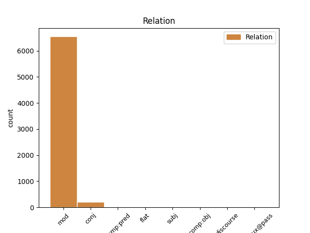
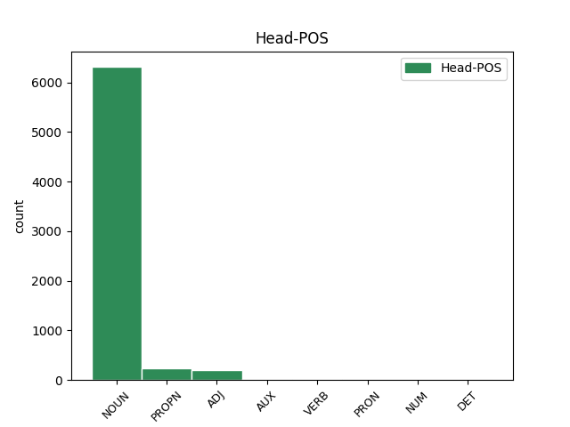
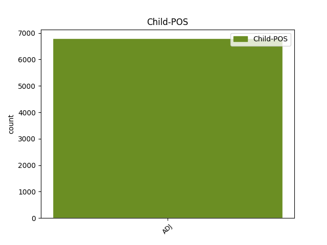

Distribution of features within this leaf



Agreement Rules sorted by frequency.
When the head token is NOUN and the dependent token is ADJ.
1 Подобна подобен ADJ Afsi Definite=Ind|Degree=Pos|Gender=Fem|Number=Sing 2 mod _ _
2 диспропорция диспропорция NOUN Ncfsi Definite=Ind|Gender=Fem|Number=Sing 0 _ _ _
3 говори _ _ _ _ 0 _ _ _
4 за _ _ _ _ 0 _ _ _
5 липсата _ _ _ _ 0 _ _ _
6 на _ _ _ _ 0 _ _ _
7 интерес _ _ _ _ 0 _ _ _
8 у _ _ _ _ 0 _ _ _
9 държавите _ _ _ _ 0 _ _ _
10 от _ _ _ _ 0 _ _ _
11 ЕС _ _ _ _ 0 _ _ _
12 . _ _ _ _ 0 _ _ _
When the head token is PROPN and the dependent token is ADJ.
1 Последната _ _ _ _ 0 _ _ _
2 жертва _ _ _ _ 0 _ _ _
3 на _ _ _ _ 0 _ _ _
4 болестта _ _ _ _ 0 _ _ _
5 е _ _ _ _ 0 _ _ _
6 14-годишната _ _ _ _ 0 _ _ _
7 Зоуи зоуи PROPN Npfsi Definite=Ind|Gender=Fem|Number=Sing 0 _ _ _
8 Джефрис _ _ _ _ 0 _ _ _
9 , _ _ _ _ 0 _ _ _
10 починала почина-(си) ADJ Vppicao-sfi Aspect=Perf|Definite=Ind|Gender=Fem|Number=Sing|Tense=Past|VerbForm=Part|Voice=Act 7 mod _ _
11 в _ _ _ _ 0 _ _ _
12 събота _ _ _ _ 0 _ _ _
13 . _ _ _ _ 0 _ _ _
When the head token is ADJ and the dependent token is ADJ.
1 Такава _ _ _ _ 0 _ _ _
2 позиция _ _ _ _ 0 _ _ _
3 на _ _ _ _ 0 _ _ _
4 управляващите _ _ _ _ 0 _ _ _
5 би _ _ _ _ 0 _ _ _
6 могла _ _ _ _ 0 _ _ _
7 да _ _ _ _ 0 _ _ _
8 породи _ _ _ _ 0 _ _ _
9 в _ _ _ _ 0 _ _ _
10 нашите _ _ _ _ 0 _ _ _
11 европейски _ _ _ _ 0 _ _ _
12 партньори _ _ _ _ 0 _ _ _
13 съмнение _ _ _ _ 0 _ _ _
14 и _ _ _ _ 0 _ _ _
15 недоверие _ _ _ _ 0 _ _ _
16 по _ _ _ _ 0 _ _ _
17 отношение _ _ _ _ 0 _ _ _
18 на _ _ _ _ 0 _ _ _
19 българската _ _ _ _ 0 _ _ _
20 евроинтеграционна евроинтеграционен ADJ Afsi Definite=Ind|Degree=Pos|Gender=Fem|Number=Sing 0 _ _ _
21 и _ _ _ _ 0 _ _ _
22 регионална регионален ADJ Afsi Definite=Ind|Degree=Pos|Gender=Fem|Number=Sing 20 conj _ _
23 политика _ _ _ _ 0 _ _ _
24 , _ _ _ _ 0 _ _ _
25 предупреждават _ _ _ _ 0 _ _ _
26 от _ _ _ _ 0 _ _ _
27 БЕЛ _ _ _ _ 0 _ _ _
28 . _ _ _ _ 0 _ _ _
When the head token is AUX and the dependent token is ADJ.
1 Гората _ _ _ _ 0 _ _ _
2 била съм AUX Vxitcat-sfi Aspect=Imp|Definite=Ind|Gender=Fem|Mood=Ind|Number=Sing|VerbForm=Part|Voice=Act 0 _ _ _
3 достатъчна достатъчен ADJ Afsi Definite=Ind|Degree=Pos|Gender=Fem|Number=Sing 2 comp:pred _ _
4 и _ _ _ _ 0 _ _ _
5 никой _ _ _ _ 0 _ _ _
6 не _ _ _ _ 0 _ _ _
7 правил _ _ _ _ 0 _ _ _
8 опити _ _ _ _ 0 _ _ _
9 да _ _ _ _ 0 _ _ _
10 пресече _ _ _ _ 0 _ _ _
11 порочната _ _ _ _ 0 _ _ _
12 практика _ _ _ _ 0 _ _ _
13 . _ _ _ _ 0 _ _ _
When the head token is VERB and the dependent token is ADJ.
1 Този _ _ _ _ 0 _ _ _
2 закон _ _ _ _ 0 _ _ _
3 с _ _ _ _ 0 _ _ _
4 пълно _ _ _ _ 0 _ _ _
5 право _ _ _ _ 0 _ _ _
6 може _ _ _ _ 0 _ _ _
7 да _ _ _ _ 0 _ _ _
8 бъде _ _ _ _ 0 _ _ _
9 наречен нарека-(се) VERB Vpptcv--smi Aspect=Perf|Definite=Ind|Gender=Masc|Number=Sing|VerbForm=Part|Voice=Pass 0 _ _ _
10 епохален епохален ADJ Amsi Definite=Ind|Degree=Pos|Gender=Masc|Number=Sing 9 comp:obj _ _
11 в _ _ _ _ 0 _ _ _
12 историята _ _ _ _ 0 _ _ _
13 на _ _ _ _ 0 _ _ _
14 американското _ _ _ _ 0 _ _ _
15 здравеопазване _ _ _ _ 0 _ _ _
16 . _ _ _ _ 0 _ _ _
When the head token is PRON and the dependent token is ADJ.
1 Това _ _ _ _ 0 _ _ _
2 обяви _ _ _ _ 0 _ _ _
3 самият сам ADJ Amsf Definite=Def|Degree=Pos|Gender=Masc|Number=Sing 4 mod _ _
4 той аз PRON Ppe-os3m Case=Nom|Gender=Masc|Number=Sing|Person=3|PronType=Prs 0 _ _ _
5 преди _ _ _ _ 0 _ _ _
6 началото _ _ _ _ 0 _ _ _
7 на _ _ _ _ 0 _ _ _
8 кулминацията _ _ _ _ 0 _ _ _
9 на _ _ _ _ 0 _ _ _
10 Петнадесетото _ _ _ _ 0 _ _ _
11 международно _ _ _ _ 0 _ _ _
12 биенале _ _ _ _ 0 _ _ _
13 на _ _ _ _ 0 _ _ _
14 хумора _ _ _ _ 0 _ _ _
15 и _ _ _ _ 0 _ _ _
16 сатирата _ _ _ _ 0 _ _ _
17 в _ _ _ _ 0 _ _ _
18 Деня _ _ _ _ 0 _ _ _
19 на _ _ _ _ 0 _ _ _
20 Габрово _ _ _ _ 0 _ _ _
21 . _ _ _ _ 0 _ _ _
When the head token is NUM and the dependent token is ADJ.
1 Ако _ _ _ _ 0 _ _ _
2 темповете _ _ _ _ 0 _ _ _
3 се _ _ _ _ 0 _ _ _
4 запазят _ _ _ _ 0 _ _ _
5 , _ _ _ _ 0 _ _ _
6 през _ _ _ _ 0 _ _ _
7 2019 _ _ _ _ 0 _ _ _
8 г. _ _ _ _ 0 _ _ _
9 ще _ _ _ _ 0 _ _ _
10 има _ _ _ _ 0 _ _ _
11 3 _ _ _ _ 0 _ _ _
12 млрд. _ _ _ _ 0 _ _ _
13 копия _ _ _ _ 0 _ _ _
14 на _ _ _ _ 0 _ _ _
15 певеца _ _ _ _ 0 _ _ _
16 или _ _ _ _ 0 _ _ _
17 близо _ _ _ _ 0 _ _ _
18 една един NUM Mcfsi Definite=Ind|Gender=Fem|Number=Sing|NumType=Card 0 _ _ _
19 трета трети ADJ Mofsi Definite=Ind|Degree=Pos|Gender=Fem|Number=Sing|NumType=Ord 18 mod _ _
20 от _ _ _ _ 0 _ _ _
21 жителите _ _ _ _ 0 _ _ _
22 на _ _ _ _ 0 _ _ _
23 Земята _ _ _ _ 0 _ _ _
24 , _ _ _ _ 0 _ _ _
25 твърди _ _ _ _ 0 _ _ _
26 в. _ _ _ _ 0 _ _ _
27 " _ _ _ _ 0 _ _ _
28 Дейли _ _ _ _ 0 _ _ _
29 стар _ _ _ _ 0 _ _ _
30 " _ _ _ _ 0 _ _ _
31 . _ _ _ _ 0 _ _ _
When the head token is DET and the dependent token is ADJ.
1 И _ _ _ _ 0 _ _ _
2 държавата _ _ _ _ 0 _ _ _
3 няма _ _ _ _ 0 _ _ _
4 право _ _ _ _ 0 _ _ _
5 да _ _ _ _ 0 _ _ _
6 отдава _ _ _ _ 0 _ _ _
7 предпочитания _ _ _ _ 0 _ _ _
8 на _ _ _ _ 0 _ _ _
9 една един DET Pfe-os-fi Definite=Ind|Gender=Fem|Number=Sing|PronType=Ind 0 _ _ _
10 или _ _ _ _ 0 _ _ _
11 друга друг ADJ Afsi Definite=Ind|Degree=Pos|Gender=Fem|Number=Sing 9 conj _ _
12 вяра _ _ _ _ 0 _ _ _
13 . _ _ _ _ 0 _ _ _
Disagree Examples:
1 И _ _ _ _ 0 _ _ _
2 друго друг ADJ Ansi Definite=Ind|Degree=Pos|Gender=Neut|Number=Sing 4 comp:obj _ _
3 беше _ _ _ _ 0 _ _ _
4 забелязал забележа-(се) VERB Vpptcao-smi Aspect=Perf|Definite=Ind|Gender=Masc|Number=Sing|Tense=Past|VerbForm=Part|Voice=Act 0 _ _ _
5 дядо _ _ _ _ 0 _ _ _
6 Руси _ _ _ _ 0 _ _ _
7 . _ _ _ _ 0 _ _ _
1 Глава глава NOUN Ncmsi Definite=Ind|Gender=Masc|Number=Sing 0 _ _ _
2 девета девети ADJ Mofsi Definite=Ind|Degree=Pos|Gender=Fem|Number=Sing|NumType=Ord 1 mod _ _
1 Но _ _ _ _ 0 _ _ _
2 обратното обратен ADJ Ansd Definite=Def|Degree=Pos|Gender=Neut|Number=Sing 5 mod _ _
3 - _ _ _ _ 0 _ _ _
4 тази _ _ _ _ 0 _ _ _
5 мисъл мисъл NOUN Ncfsi Definite=Ind|Gender=Fem|Number=Sing 0 _ _ _
6 християнството _ _ _ _ 0 _ _ _
7 приема _ _ _ _ 0 _ _ _
8 добре _ _ _ _ 0 _ _ _
9 . _ _ _ _ 0 _ _ _
1 Лазаръс _ _ _ _ 0 _ _ _
2 и _ _ _ _ 0 _ _ _
3 Фолкмън _ _ _ _ 0 _ _ _
4 ( _ _ _ _ 0 _ _ _
5 Lazarus lazarus PROPN Hmsi Definite=Ind|Gender=Masc|Number=Sing 0 _ _ _
6 , _ _ _ _ 0 _ _ _
7 & _ _ _ _ 0 _ _ _
8 Folkman _ _ _ _ 0 _ _ _
9 , _ _ _ _ 0 _ _ _
10 1984 1984 ADJ Mofsi Definite=Ind|Degree=Pos|Gender=Fem|Number=Sing|NumType=Ord 5 mod _ SpaceAfter=No
11 ) _ _ _ _ 0 _ _ _
12 идентифицират _ _ _ _ 0 _ _ _
13 две _ _ _ _ 0 _ _ _
14 общи _ _ _ _ 0 _ _ _
15 форми _ _ _ _ 0 _ _ _
16 на _ _ _ _ 0 _ _ _
17 справяне _ _ _ _ 0 _ _ _
18 : _ _ _ _ 0 _ _ _
19 фокусирано _ _ _ _ 0 _ _ _
20 върху _ _ _ _ 0 _ _ _
21 проблема _ _ _ _ 0 _ _ _
22 и _ _ _ _ 0 _ _ _
23 фокусирано _ _ _ _ 0 _ _ _
24 върху _ _ _ _ 0 _ _ _
25 емоциите _ _ _ _ 0 _ _ _
26 . _ _ _ _ 0 _ _ _
1 Лазаръс _ _ _ _ 0 _ _ _
2 и _ _ _ _ 0 _ _ _
3 Фолкмън _ _ _ _ 0 _ _ _
4 ( _ _ _ _ 0 _ _ _
5 Lazarus _ _ _ _ 0 _ _ _
6 , _ _ _ _ 0 _ _ _
7 & _ _ _ _ 0 _ _ _
8 Folkman _ _ _ _ 0 _ _ _
9 , _ _ _ _ 0 _ _ _
10 1984 _ _ _ _ 0 _ _ _
11 ) _ _ _ _ 0 _ _ _
12 идентифицират _ _ _ _ 0 _ _ _
13 две _ _ _ _ 0 _ _ _
14 общи _ _ _ _ 0 _ _ _
15 форми форма NOUN Ncfpi Definite=Ind|Gender=Fem|Number=Plur 0 _ _ _
16 на _ _ _ _ 0 _ _ _
17 справяне _ _ _ _ 0 _ _ _
18 : _ _ _ _ 0 _ _ _
19 фокусирано фокусирам ADJ Vpptcv--sni Aspect=Perf|Definite=Ind|Gender=Neut|Number=Sing|VerbForm=Part|Voice=Pass 15 mod _ _
20 върху _ _ _ _ 0 _ _ _
21 проблема _ _ _ _ 0 _ _ _
22 и _ _ _ _ 0 _ _ _
23 фокусирано _ _ _ _ 0 _ _ _
24 върху _ _ _ _ 0 _ _ _
25 емоциите _ _ _ _ 0 _ _ _
26 . _ _ _ _ 0 _ _ _